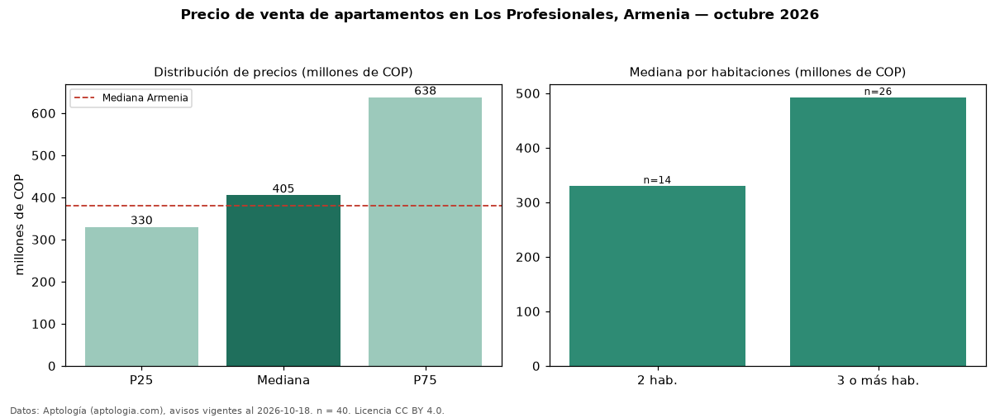

Precio de venta de apartamentos en Los Profesionales, Armenia — octubre 2026
COP 405 millones es el precio mediano de apartamentos en venta en Los Profesionales, Armenia (n = 40 avisos). Frente a la mediana de Armenia para apartamentos (COP 380 millones), queda 7 % por encima. Por metro cuadrado, la mediana es COP 4,92 millones/m² (n = 39 avisos con área), 8 % por debajo de Armenia (COP 5,33 millones/m²). El área mediana anunciada es 96 m². El segmento con más oferta es el de 3 o más habitaciones (26 avisos, mediana COP 492 millones); pasar de 2 habitaciones a 3 o más habitaciones cambia la mediana +49 %. La administración mediana declarada es COP 363.782 al mes (n = 31). La mitad central de los avisos va de COP 330 millones a COP 638 millones (razón 1,9), una dispersión moderada. Por precio mediano es el puesto 8 de 18 barrios de Armenia con al menos 30 avisos de apartamentos en venta (COP): en la franja media. Datos: Aptología (aptologia.com), CC BY 4.0 — https://www.aptologia.com/venta/armenia/los-profesionales. Archivos: PDF, CSV con las cifras y gráfica PNG.

| Avisos únicos | 40 |
|---|---|
| Percentil 25 | COP 330.000.000 |
| Mediana | COP 405.000.000 |
| Percentil 75 | COP 637.612.250 |
| Mediana por m² | COP 4.918.032 |
Fuente: avisos vigentes de portales inmobiliarios recopilados por Aptología, deduplicados (mínimo 30 avisos únicos por celda). Precios pedidos, no cerrados. Fecha: 2026-10-18.